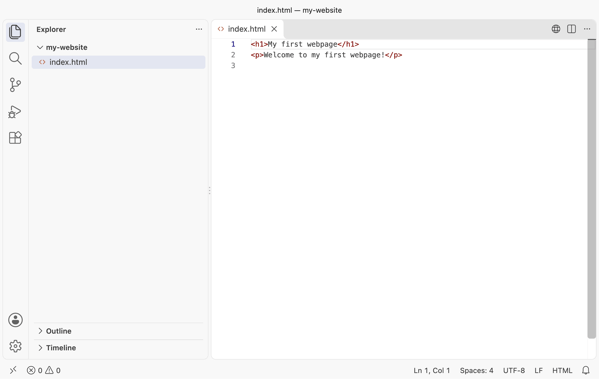
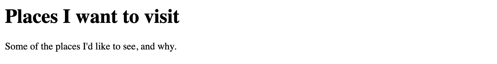

<h1>My first webpage</h1>
<p>Welcome to my first webpage!</p>
Chapter 2Write your first web page
A web page is a text file. When you visit a website, your browser asks another computer for that file, reads the instructions inside it and draws the page you see.
You don’t need another computer to start. Your browser can read a file straight from your own computer, so you can write a page and see the result straight away. In this chapter, you’ll set up a place to work, write a page and try it in your browser. In the next, you’ll put it online.
Install a code editor
You’ll write your website’s files in a code editor: a text editor designed for writing code. We’ll use Visual Studio Code, usually called VS Code. It’s free, and it works on Windows and macOS.
Go to https://code.visualstudio.com, download the version for your computer and install it as you would any other application. Then open it.
You may wonder why you can’t use a word processor such as Microsoft Word. A word processor saves its own formatting inside the file, and a browser can’t read that. A code editor saves exactly the characters you type, and nothing else.
Checkpoint
VS Code is open. It may show a Welcome tab; you can close it.
Make a folder for your website
Every file that makes up your website will live in one folder.
Open File Explorer on Windows, or Finder on macOS. In your Documents folder, create a
new folder called my-website.
Back in VS Code, choose File → Open Folder and select my-website. VS Code may ask
whether you trust the authors of the files in this folder. You’re the author, so
choose the option to trust them.
The panel down the left-hand side is the Explorer. It shows the files in the folder you’ve opened. At the moment, there aren’t any.
Create your first page
Hover over the folder’s name at the top of the Explorer, and click the New File
button that appears. Name the file index.html and press Enter.
index.html is the name websites use for their home page. Use exactly that name, all
in lower case, ending with .html. That ending tells the browser the file contains
HTML.
HTML stands for Hypertext Markup Language. It describes the content of a page and how it’s organised. Type the following into the new file:
These two lines are HTML elements.
Each element begins with an opening tag, such as <h1>, and ends with a closing tag,
such as </h1>. The / marks the closing tag. The words between the tags are the
element’s content.
The h1 element marks up the page’s main heading. The p element marks up a
paragraph.
Now save the file: choose File → Save, or press Ctrl+S on Windows or Cmd+S on macOS. While a file has unsaved changes, VS Code shows a dot on its tab. The dot disappears when you save.
Checkpoint
The Explorer lists index.html. Its tab contains your two lines of HTML, with no dot
showing unsaved changes.

Your first file in VS Code
Open the page in your browser
Find index.html in File Explorer or Finder, inside your my-website folder. Drag the
file onto an open browser window.
You can also right-click the file, choose Open With, and pick your browser. Use one of these methods rather than double-clicking: depending on your computer’s settings, double-clicking may open the file in VS Code instead.
The browser shows “My first webpage” as a large heading, with “Welcome to my first webpage!” underneath it. The browser uses the tags to work out how to display each part of the page. It doesn’t show the tags themselves.
Look at the address bar. Instead of a website’s address, it shows file://, followed
by the location of the file on your computer. The browser is reading the file straight
from your folder. Nobody else can see this page yet.
Checkpoint
Your browser shows the heading and the paragraph, without any tags. Its address starts
with file://.

Your first page, opened from its file
If you can see the tags on the page, check that the filename ends in .html, and that
you saved the file.
Change, save, refresh
Let’s change the heading. Back in VS Code, change only the words between <h1> and
</h1>, so the line reads:
<h1>My very first webpage</h1>
Save the file. Then switch to your browser and refresh the page, using the refresh button or by pressing F5 on Windows or Cmd+R on macOS.
Checkpoint
The heading now says “My very first webpage”. The paragraph hasn’t changed.
Edit, save, refresh: you’ll repeat that cycle hundreds of times as you work through this book. If a change doesn’t appear, the first thing to check is whether you saved the file.
Make the page your own
Now choose what you’d like your website to be about. It could be places you want to visit, music you enjoy, or another subject you know well. Choose something you’re happy to share, because you’ll soon publish it.
Replace the words between <h1> and </h1> with a heading for your subject. Replace
the words between <p> and </p> with a sentence introducing it. Keep all the tags.
Save, then refresh your browser.
Checkpoint
Your page shows your own heading and introductory sentence.
Your first web page exists, but only on your computer. Next, you’ll put it online so that anyone can visit it.